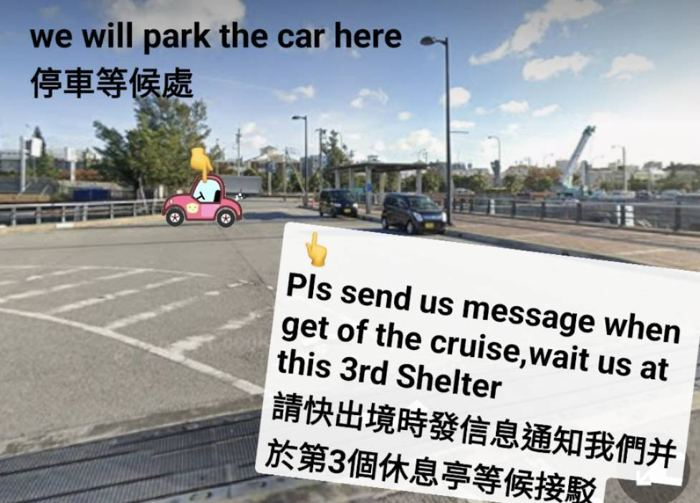
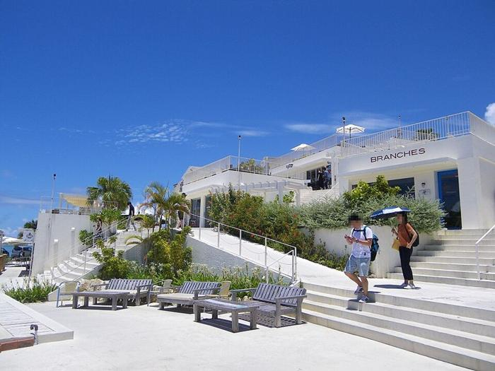
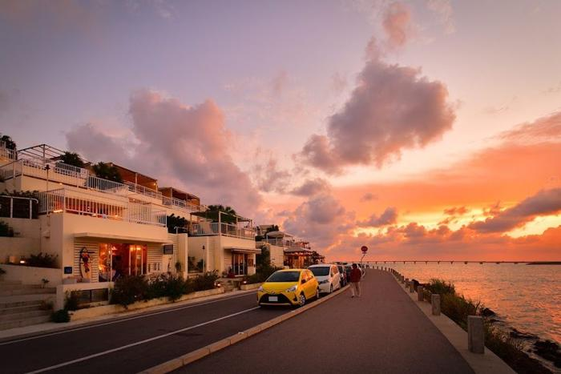
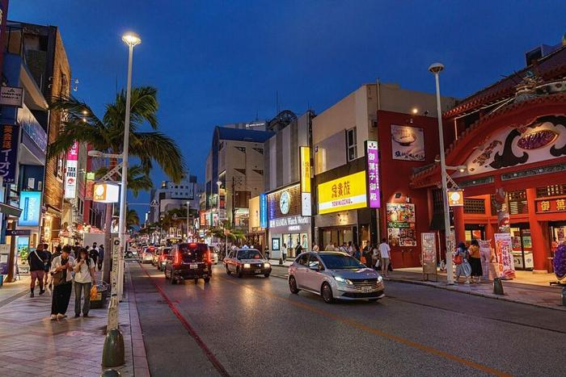
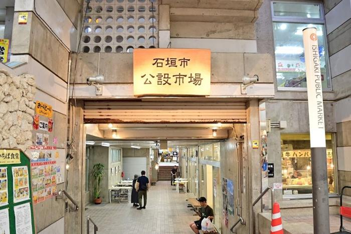
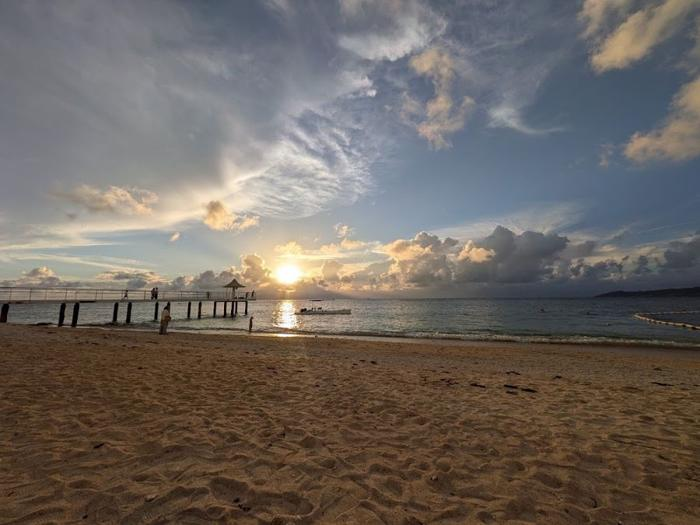
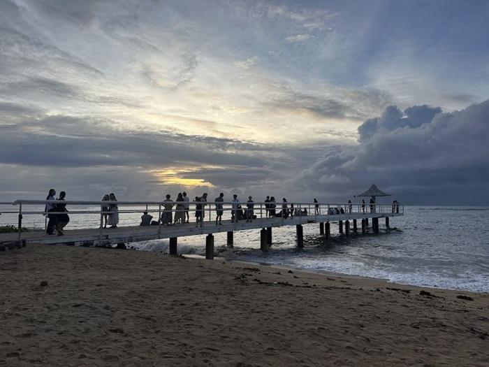

麗星郵輪 探索星號・2026 年 9 月 20 日至 23 日
行動基地台 出海去
那霸・石垣島 行程手冊
基隆 → 那霸 → 石垣島 → 基隆，三晚四天，8 人團體
版本 2026-09-19（依網頁 v20260918j）
給誰看 同行 8 位成員，出發前讀一遍，靠岸當天查時間與店家
行程有變時 以網頁版為準：nancylin071.github.io/mobile-base-station-cruise-2026
閱讀重點
五分鐘看完整趟
兩個時間絕對不能錯，三件事已經訂好，其餘都是彈性。
22:30
9/21 那霸 回到船上
當地時間。船上時鐘 21:30。開船 23:59。
21:30
9/22 石垣島 回到船上
當地時間。船上時鐘 20:30。開船 23:00。
船不等人。手機到日本會自動變成日本時間，船上的鐘不會。本手冊靠岸行程一律用當地時間；回船前把兩個時間都對一次。
已經訂好的三件事
| 項目 | 內容 | 要注意 |
|---|
| 那霸租車已訂 | Sunrise Rentacar 日產 Serena Hybrid 8 人座。碼頭取車、19:00 還車到店，店家再送到國際通。 | 餘額取車時付現金；駕駛帶三樣證件。 |
| 那霸晚餐已訂 | 燒肉もとぶ牧場 那霸店，20:00 集合，三桌：Verna 2 人、Nancy 4 人（20:00）、Paula 2 人（20:15）。 | 90 分鐘制，21:30 前吃完。 |
| 石垣島不包車已決定 | 市區慢逛、公設市場、藥妝，傍晚計程車去富崎海灘看日落，回市區在公設市場周邊吃晚餐，不訂位。 | 三趟計程車要在 9/21 先預約。 |
每天一句話
| 日期 | 港口 | 當天重點 |
|---|
| 09/20 日 | 基隆 | 16:00–18:30 西岸旅客中心報到，20:00 開船。想逛開港祭市集的 14:00 到。 |
| 09/21 一 | 那霸 | 租車去瀨長島看海看飛機，還車後國際通分開逛，20:00 集合吃燒肉，22:30 前回船。 |
| 09/22 二 | 石垣島 | 市區、公設市場、大國藥妝慢逛，17:00 計程車去富崎看 18:41 日落，晚餐市場周邊，21:30 前回船。 |
| 09/23 三 | 基隆 | 09:00 到港。前一晚結帳、行李放門口。 |
出發前最後確認
- 線上預辦登船（09/19 20:00 前），截圖存手機
- 每人護照影本 A4 一份，不裁切、不寫字
- 駕駛：駕照、日文譯本、護照正本三樣拍照
- 租車餘額現金；日圓零錢
- LINE 加「石垣島タクシー配車」；裝 DiDi、Uber、eSIM
- 藥妝留到石垣島買，那霸先不逛
目錄
本手冊內容
怎麼讀這本手冊
- 靠岸行程的時間一律是當地時間（比船上時鐘快 1 小時）；船上活動用台灣時間。
- 標記 已訂 表示已付訂或有訂位紀錄；已決定 表示方案定案但不需預約；雷店 表示網友一致不推。
- 紅底卡片是硬性截止時間，金底卡片是當天要留意的事，綠底卡片是已訂好的內容。
- 每章開頭先給當天一句話和路線圖，接著是時間表，最後才是店家與備案。趕時間只看前兩段。
本手冊內容整理自 2026-09-16 至 09-19 的規劃筆記與網頁；價格於 2026-09-17 逐項對業者官網核實。手冊與網頁不同時，以網頁為準。
第 1 章
出發前與登船日（9/20 週日）
18:30
完成報到
報到 16:00–18:30，關閘 19:00，開船 20:00。遲到視同放棄，不退費。
報到地點與流程
基隆港西岸旅客服務中心（仁愛區港西街 16 號），基隆火車站北站出口步行 4 分鐘。現場人多、每關都排，建議 16:00 就到。
1託運行李
只收硬殼箱，貴重物、藥品、證件隨身
22 樓報到
護照正本＋影本＋船票，領房卡、入境卡、海關申報單
3安檢、移民署查驗
4上船
船員收走護照，最後一天憑房卡領回
領到的入境卡與申報單遺失不補發。開船前安全演習強制參加，集合點印在房卡上。
每人要帶
- 護照正本，效期 6 個月以上
- A4 護照影本一份：一比一、清晰、不寫字、不用回收紙
- 船票（紙本或手機）
- 自備：牙刷牙膏、拖鞋、房卡掛繩、萬國插頭、薄外套、暈船藥、日圓零錢、eSIM
行李與資格
- 每人 2 件、合計 50 公斤內
- 懷孕 24 週以上、未滿 6 個月嬰兒、90 歲以上不能上船
- 房號前 1 到 2 位是樓層，例如 06519 在 6 樓
不能帶上船
- 吹風機、電熨斗、直髮器、電湯匙、電毯
- 指甲刀以外的刀具，含刮鬍刀片
- 酒：會被保管到下船
- 無人機、雷射筆、變壓器、電子菸
- 未煮熟或未真空的食物
不能帶進日本或台灣
- 肉類、水果、農產品、寵物飼料。肉類未申報最高罰 300 萬。
順道：基隆開港祭
海洋廣場就在旅客中心對面，走路 5 分鐘。市集 14:00–20:00（在地小吃、文創、台啤攤、集章抽獎）。想逛的人 14:00 到基隆，逛完 16:00 報到；行李先託運再逛。9/20 晚上 20:00 港灣花火由麗星郵輪贊助，我們 20:00 開船，在甲板上看即可。
第 2 章
船上生活與船上費用
基本規則
- 船上一律台灣時間。船上郵報、表演、餐廳都寫台灣時間。
- 消費刷房卡記帳，離船前一晚到 7 樓結帳（或下船前至少 3 小時）。信用卡只收 VISA、MASTER；不用先綁卡。
- 房間有吹風機、保險箱、熱水壺。沒有瓶裝水，各樓層有飲水機。
- 7 樓櫃台有暈船藥與紙本每日郵報；醫務中心在 4 樓船頭，收費。
- 只能在指定室外區抽菸。看表演不能錄影。
- 網路慢又貴，建議用日本 eSIM，靠近日本就有訊號。
吃
- 免費餐廳三間：麗都自助（12 樓船尾）、百味軒（6 樓船中）、星夢（6 樓船尾）。
- 同一餐期只能選一間；同時段吃第二間要付費（早餐 350、午晚餐 450）。其他餐廳都付費。
- 上船先去餐廳吃，房間還在整理。12 樓自助餐要早到才不用排。
- 三、四人房加床晚餐後才會鋪。
船上必付費用（每人，台幣）
| 項目 | 金額 | 說明 |
|---|
| 服務費 | 600 × 3 晚 | 內艙、海景房；陽台房 800、套房 1,000；2 歲以下免收 |
| 燃油附加費 | 300 × 3 晚 | 2026-06-26 起出發航次；10/01 起調為 450 |
| 日本國際觀光旅客稅 | 約 630 | 2026-07-01 起每人 ¥3,000，船上結清 |
| 合計 | 約 3,300 | 海景房 3 晚。網路標準方案另計 290／晚，須整程購買（3 晚 870） |
金額依台灣代理旅行社 2026 年公告；船公司官網未列金額。船上消費是否另加服務費，以船上公告為準。
第 3 章
9/21 那霸：租車、瀨長島、國際通
靠岸 15:00，實際下船約 16:00–16:30，日落 18:27。租車已訂：碼頭取車開去瀨長島，還車後店家送到國際通分開逛，20:00 集合吃燒肉，22:30 前回船。
時間表
瀨長島待多久，當天 17:30 在現場舉手表決
多逛國際通：17:50 離開，18:25 到國際通，晚餐前有 1 個半小時。看日落：18:27 看完日落 18:30 離開，19:05 到國際通，晚餐前 55 分鐘。其餘時間兩種都一樣。
靠岸、入境、下船租車店家 15:00 起在外面等；出關那一刻就用 LINE 通知店家。
碼頭出口外第 3 個休息亭取車拍車況、付餘額現金。
瀨長島 Umikaji Terrace露台看海、看飛機、喝一杯。17:50 或 18:30 離開。
開回租車店還車那霸市曙 1-6-1，約 15 分鐘。最晚 19:30。店家再送大家到國際通。
國際通分開行動伴手禮、逛街、公設市場周邊。藥妝留到明天石垣島。
集合：燒肉もとぶ牧場 那霸店久茂地 MK 大樓 3F。Verna 2 人、Nancy 4 人 20:00；Paula 2 人 20:15。90 分鐘制。
吃完再逛一下多數店 21:00–22:00 關，唐吉訶德、屋台村還開。22:05 在縣廳前搭計程車，8 人兩台，5 到 10 分鐘，約 ¥750–950／台。
回到船上
租車與取還車流程 已訂

店家提供的等候點示意：出碼頭出口往外走，第 3 個休息亭，車停在旁邊。出關時先傳訊息。
- 車輛
- Sunrise Rentacar 日產 Serena Hybrid 8 人座。禁菸、日文導航、手機架、藍牙。
- 取車
- 店家 15:00 起在若狹郵輪碼頭等。出關後 LINE 通知，走到第 3 個休息亭。交車時雙方拍照。
- 還車
- 19:00 開到店（那霸市曙 1-6-1，離國際通約 10 分鐘），最晚 19:30。還完店家送大家到國際通。
- 費用
- 餘額 取車時付現金（刷卡加 4%）。含車資 1 天＋一般保險 1 天。
- 駕駛帶
- 台灣駕照正本、日文譯本、護照正本，三樣先拍照存手機（店家要電子檔）。
- 取消
- 10 天前免費；6–10 天 30%；4–5 天 50%；1–3 天 100%。
- 聯絡
- GOGOTOUR LINE 訂單對話；店家電話 070-4445-7046。
條款重點
- 基本保險對人無上限；車輛損壞有自負額。NOC（車輛修理期間營業損失）由顧客負擔。
- 車內禁菸，還車有菸味或異味收清潔費。
- 交車、還車都會拍照錄影，自己也拍一輪。
- 車輛證件放手套箱不拿出；鑰匙套、行車記錄器等配件不可拆。
- 出事先報警 110，再通知店家；沒有事故證明書保險不賠。
- 停車、高速費自付。瀨長島停車免費。
延誤怎麼辦
- 17:15 還沒出關：瀨長島縮成 30 分鐘，或改去 PARCO CITY（15 分鐘，停車免費），18:30 出發還車。
- 18:00 還沒出關：不開了。跟店家說改在碼頭交還、只付車資，走路 15 分鐘進國際通。
停車費參考
- 瀨長島、PARCO CITY：免費。
- 縣廳前地下停車場：第一小時 ¥300，之後每 30 分 ¥150，5 小時以上一律 ¥1,500。
- 看牌子注意「最大料金」封頂價、「小型車専用」不能停 8 人座。
地點


瀨長島 Umikaji Terrace
白色階梯露台，離碼頭 16 分鐘、離國際通 17 分鐘
- 時間
- 店家多開到 21:00。免門票、免停車費。日落 18:27，17:45 後天色最美。
- 怎麼玩
- 沿階梯往上逛，找一家面海的店坐下。想放空選 HAMMOCK CAFE LA ISLA 的吊床座（11:00–21:00）。機場跑道就在對面，飛機一直起降。
- 別排
- 幸福鬆餅要等 1 到 2 小時，我們沒有這個時間。蝦蝦飯想試就點一盤分著吃，別當晚餐。

國際通
1.6 公里主街，走完約 25 分鐘
- 走向
- 西端縣廳前站（晚餐、回碼頭計程車都在這）到東端安里站（唐吉訶德）。多數店 21:00–22:00 關。
- 市場
- 第一牧志公設市場從中段轉進市場本通走 3 分。2 樓食堂 20:00 最後點餐，1 樓 19:45 停收代客料理（每人 ¥550、3 道內）。晚餐後只能逛周邊巷子。
- 怎麼逛
- 店家放人後分開逛 → 20:00 集合吃燒肉 → 21:30 吃完再逛 → 22:05 縣廳前攔車回碼頭。
照片：Google 地圖網友實拍與 Wikimedia 授權照，僅供行前辨認。
晚餐與購物
燒肉もとぶ牧場 那霸店・20:00 集合（已訂）
| 時間 | 訂位人 | 人數 |
|---|
| 20:00 | Verna | 2 |
| 20:00 | Nancy | 4 |
| 20:15 | Paula | 2 |
90 分鐘制，21:30 前吃完。國際通店訂滿，改訂這家分店。
- 地址
- 久茂地 2-1-3 久茂地 MK 大樓 3F，ロコアナハ飯店內，國際通みずほ銀行對面，縣廳前站走 2 分。
- 電話
- 098-943-3897
- 營業
- 晚餐 15:00–22:00，21:30 最後點餐。可刷卡、PayPay。
- 必點
- 本部牛上等牛舌、英式烤牛肉、牛尾湯。套餐 ¥6,600–7,600 起，單點約 ¥6,000–8,000／人。
- 不吃牛
- 點豬、雞、海鮮單品，先看菜單。
備案（沒到或臨時換店才用）：うりずん 本店，安里站旁，098-885-2178 只收電話，琉球料理老店，含酒約 ¥3,000–5,000／人；小やじ 上里肌豬排定食 ¥1,980，不用訂位，20:00 關。
國際通買什麼
大家都說好：御菓子御殿 紅芋塔（冰過更好吃）、鹽屋 雪塩厚夾心餅乾（「沖繩版白色戀人」）、Royce 石垣鹽巧克力洋芋片（日本價約台灣一半）、Calbee 現炸紅芋條（只有國際通門市有）、石垣島辣油（唐吉訶德最便宜）、Orion 豆菓子、首里石鹼。
不用買：雪鹽費南雪、雪鹽棉花餅。Calbee 和鹽屋先逛，多數店 21:00–22:00 關。美麗海水族館伴手禮店可退稅。藥妝建議留到明天石垣島大國藥妝慢慢逛，這裡可先不逛。
避開與不去
雷店 幸福鬆餅（瀨長島）網友實測等 76 分鐘到 2 小時；蝦蝦飯評價兩極，不當正餐；唐吉訶德人多空間小，補貨可以別逛太久。
不去：舊海軍司令部壕、玉泉洞、護國寺（經過波上宮時別進去）。
想看海看書：瀨長島 HAMMOCK CAFE LA ISLA（11:00–21:00，吊床面海）；ジュンク堂書店 那霸店（10:00–21:00，離國際通走 5 分）。
第 4 章
9/22 石垣島：市區、富崎海灘
靠岸 14:00，實際下船約 14:30–14:45。不包車、不租車：市區慢慢逛，傍晚計程車去富崎海灘看 18:41 日落，回市區在公設市場周邊吃晚餐。三趟計程車前一天先預約。
時間表
靠岸、下船
走進市區碼頭到公設市場走路 10 分鐘；或搭接駁到離島碼頭再走 5 分鐘。
市區慢遊公設市場（石垣牛握壽司、2 樓伴手禮）→ 歐格麗娜商店街 → 大國藥妝（730 記念碑前，Joy World 2 樓）→ SAN-A 或 MaxValu 超市。
預約好的計程車去富崎兩台，12 分鐘，約 ¥1,800／台。沒約到車就改搭 16:15 公車，見「叫車與備案」。
富崎海灘看日落日落 18:41。棧橋走到盡頭，太陽正對著。海灘 9 月營業到 18:30，到了先問櫃檯 18:30 後能不能留在棧橋。
預約好的計程車在飯店正門接12 分鐘回市區。車沒來：請櫃檯叫，或 19:42 末班公車。
晚餐：公設市場周邊現場挑不訂位，分 2 到 3 桌。候選店見「晚餐候選」。
預約好的計程車回港5 分鐘。走路要 40 分鐘，別走。
回到船上
下雨也能走：公設市場、商店街、藥妝都在拱廊裡。富崎下雨就不去，改在市區多逛。
叫車與備案
9/22 是日本國民の休日，又是靠港日，現場很難攔到車
三趟（17:00 市區→富崎、18:50 富崎→市區、20:30 市區→碼頭）都在 9/21 先約好。8 人要說清楚兩台，或一台 9 人座。
先試LINE「石垣島タクシー配車」
全島 12 家車行 265 台共用，加好友就能叫，24 小時
其次電話叫車中心
0980-82-4649；石垣タクシー 0980-82-3088。指定時間加 ¥550／台
第三DiDi App
官方寫石垣市可用、可預約 2 天內；旺季要等很久，未找到郵輪日實例
備案東運輸 ⑨ 線公車
16:15 去、19:42 末班回
公車細節
東運輸 ⑨ 川平リゾート線是唯一經過富崎的公車。巴士總站（美崎町 3，離島碼頭走 3 分）16:15 發、16:37 到「フサキビーチリゾート」，¥360。一天只有 6 班，18:15 那班 18:37 到、太趕。回程末班 19:42 發、20:05 到總站，之後沒車。東運輸 0980-87-5423。
行不通的
飯店接駁車只給住客、只跑機場。租電動腳踏車實際路程 6.7 公里、回程天黑。GO 叫車 App 石垣島不能用，Uber 也沒有。
真的去不了富崎
市區走路看日落：サザンゲートブリッジ橋頂（公設市場走 20 分，視野最開）或舊離島棧橋（走 10 分，港內船影配夕陽）。9 月太陽落在西表島剪影後面，不是落海。
回港
市區到新港郵輪碼頭 3 公里，計程車 5 分鐘；走路 40 分鐘不建議。這趟也先預約，或在離島碼頭招呼站排。
地點

石垣市公設市場
碼頭走 10 分鐘，先逛這裡
- 時間
- 9:00–20:00。我們 15:00 到，很寬裕。
- 怎麼玩
- 門口先吃一貫石垣牛握壽司（いしぎゅう本舗，¥350 起，可刷卡），1 樓看肉攤魚攤，2 樓特產中心買伴手禮。整條歐格麗娜商店街是拱廊，下雨也能走。
- 順路
- 離島碼頭、730 交差點、大國藥妝都在 5 分鐘內。
大國藥妝 石垣730記念碑前店
那霸沒逛的在這裡補
- 地址
- 大川 245 Joy World 2 樓，730 交差點旁，公設市場走 3 分鐘。
- 時間
- 10:05–21:50。電話 0980-87-0091。島上只有這一家大國，免稅帶護照影本。量大的最後回港前再買，不用提著去富崎。


富崎海灘
Fusaki 度假村前的公共海灘，離市區 12 分鐘
- 時間
- 免費，非住客可進。9 月營業 9:00–18:30，日落 18:41 在營業結束後，先問櫃檯能不能留在棧橋。
- 怎麼看
- 棧橋面西，走到盡頭視野最開，太陽正對著棧橋。日落時棧橋上很多人，早點卡位。度假村有廁所和飲料。
- 位置
- 島上離市區最近的西向海灘。飯店正門是回程計程車的接送點。
照片：Google 地圖網友實拍，僅供行前辨認。
晚餐候選 不訂位
19:10 回到市區後直接去第一家問位，沒位走到下一家，四家都在 730 交差點旁、彼此走路 1 到 3 分鐘。8 人分 2 到 3 桌比較快入座。菜單都有豬、雞、炸物、炒物，不吃牛、不吃生食的人有得吃。下午 17:00 前請一個人打電話問第一家「19:15 八人有沒有位」，等於當天預約。
1. こてっぺん 第一順位
島料理居酒屋・美崎町 12-7 舊市役所正面・公設市場走 5 分・113 席
- 電話
- 0980-87-0257
- 營業
- 16:00–24:00。週二定休但官網寫不定休，當天打電話確認。2 樓大座敷最能塞 8 人。刷卡 ¥5,000 以上。有小菜費。
- 可點
- 炸雞 ¥759、炸魚 ¥869、島魚天婦羅 ¥759、黑糖滷肉 ¥1,089、苦瓜炒蛋 ¥869、八重山そば ¥649。每人約 ¥2,800–4,000。
- 注意
- 19:00 前常滿，早到或分桌。網友負評：炸物像微波、店員態度普通。
2. あじまー商店
島料理居酒屋・大川 250-3 市役所通・走 3 分・65 席
- 營業
- 12:00–23:00 無休，料理 22:00 收。刷卡、PayPay。每人小菜費 ¥429。全店禁菸。
- 可點
- 苦瓜炒蛋 ¥858、八重山そば ¥858、海蘊湯 ¥660、滷肉、土鍋炊飯、島菜天婦羅。每人約 ¥3,000–4,000。
- 注意
- 2023 年網友沒訂位也進得去。負評：鐵板料理上桌已溫掉。
3. そば処 まーさん道
八重山そば・定食・美崎町 3，730 交差點旁・走 3 分・50 席
- 營業
- 10:00–24:00 無休。不接受預約，純現場。只收現金。全店禁菸。
- 可點
- 八重山そば ¥858、滷肉排骨定食 ¥1,580、炸魚定食 ¥1,080、麩炒蛋、苦瓜炒蛋。每人 ¥1,000–2,000。
- 注意
- 2026 年 7 月網友「幾乎滿座」，旺季排 10 分鐘。偏觀光價。最便宜、最快。
4. 海人居酒屋 源 海人めし店
海鮮居酒屋・大川 286 源大樓 1F・走 5 分・55 席
- 營業
- 16:00–23:00。週二定休、祝日營業，當天確認。刷卡、QR。小菜費 ¥550。
- 可點
- 苦瓜炒蛋 ¥800、海蘊天婦羅 ¥850、墨魚炒飯 ¥880、近海魚煮付。每人約 ¥3,000–4,000。
- 注意
- 海鮮生食為主，不吃生食的人選項較少，排最後。
避開 ひとし：沒訂位進不去、以生鮪魚為主。うさぎや：收表演費 ¥800，網友說點餐一小時沒上菜。南風：搬家後常滿、90 分鐘制、不收團體。市場 3 樓 いちば食堂 19:30 最後點餐，趕不上。
第 5 章
9/23 回基隆（週三）
前一晚（9/22 回船後）
- 房間會收到離船通知。
- 到 7 樓結帳（或下船前至少 3 小時）。
- 大件行李放門口，會有人收。
當天
- 依廣播領回護照。代領要帶對方房卡。
- 離房前檢查保險箱、抽屜、床底。
- 房卡帶著，下船前要再刷一次。
- 09:00 靠基隆。
入境台灣
- 酒 1.5 公升、菸 200 支以內免稅。
- 現金等值 1 萬美元以上要申報。
- 肉類、蔬果、種子不能帶。水果可以帶回船上吃，不能帶下船。
第 6 章
費用與現金
兩天靠岸合計每人約 ¥12,000–15,000，加船上台幣約 3,300。價格於 2026-09-17 逐項對業者官網核實。
每人費用估算（8 人平分）
| 項目 | 每人 | 怎麼算 |
|---|
| 船上必付 | 約 NT$3,300 | 服務費 600×3、燃油附加費 300×3、日本觀光稅約 630，船上結清 |
| 那霸租車 | 約 ¥2,100 | 租車 約 ¥15,000＋回程計程車兩台 ¥1,800 |
| 那霸晚餐 | ¥6,000–8,000 | もとぶ牧場 那霸店，套餐 ¥6,600–7,600 起，單點約 ¥6,000–8,000 |
| 石垣島交通 | 約 ¥600–900 | 計程車三趟各兩台約 ¥5,000（指定時間每台加 ¥550）；公車去程 ¥360／人 |
| 石垣島晚餐 | ¥1,500–4,000 | まーさん道 ¥1,000–2,000；こてっぺん、あじまー商店 ¥3,000–4,000 |
| 伴手禮、藥妝 | 自訂 | 大國藥妝、御菓子御殿、鹽屋 |
日圓現金建議每人 ¥15,000 以上
租車餘額由駕駛代付再平分；まーさん道、市場攤、公車、接駁車都只收現金；那霸回程計程車、石垣島三趟計程車也可能只收現金。刷卡在燒肉店、藥妝店、超市都可以。
石垣島計程車以起跳價估算，8 人分兩台。租車價格由 GOGOTOUR 訂單確認；船上費用依台灣代理旅行社 2026 年公告。
附錄 A
電話與聯絡總表
| 對象 | 用途 | 電話／連結 | 備註 |
|---|
| 麗星郵輪 台灣客服 | 船務 | 0080-149-8887 | 只在台灣可撥免付費 |
| Sunrise Rentacar | 那霸租車（已訂） | 070-4445-7046；GOGOTOUR LINE 訂單對話 | 出關後 LINE 通知，第 3 個休息亭取車 |
| 燒肉もとぶ牧場 那霸店 | 那霸晚餐（已訂 20:00） | 098-943-3897 | 三桌，90 分鐘制 |
| うりずん 本店 | 那霸晚餐備案 | 098-885-2178 | 只收電話 |
| 石垣島タクシーコールセンター | 石垣島叫車 | 0980-82-4649；LINE「石垣島タクシー配車」；DiDi App | 指定時間加 ¥550／台 |
| 石垣タクシー | 石垣島叫車 | 0980-82-3088 | 有 9 人座 |
| 東運輸 巴士 | 富崎公車備案 | 0980-87-5423 | ⑨ 線 16:15 去、19:42 末班回 |
| こてっぺん | 石垣島晚餐第一順位 | 0980-87-0257 | 當天下午問 19:15 八人 |
| 大國藥妝 石垣店 | 藥妝 | 0980-87-0091 | 10:05–21:50 |
| 役男短期出境 | 出發前申請 | 內政部役政署網站 | 出發前 3 到 30 日 |
在日本境內撥打不加國碼；從台灣撥加 +81 並去掉開頭的 0。
附錄 B
勾選清單
出發前
- 線上預辦登船（09/19 20:00 前），截圖存手機
- 護照影本 A4 一份，不裁切、不寫字
- 駕駛：駕照、日文譯本、護照正本三樣拍照
- 租車餘額現金；日圓零錢
- 手機裝好：LINE 加「石垣島タクシー配車」、DiDi、Uber、eSIM
- 牙刷牙膏、拖鞋、房卡掛繩、萬國插頭、薄外套、暈船藥
9/21 那霸
- 出關 LINE 通知租車店家
- 取車拍照、付餘額現金
- 17:30 表決瀨長島待多久
- 預約 9/22 三趟石垣島計程車
- 22:30 前回船
9/20 登船日
- 護照正本、A4 影本、船票
- 硬殼箱託運，貴重物隨身
- 18:30 前完成報到
靠岸日帶下船
- 房卡＋護照影本（貼上陸許可）＋海關申報單（一家一張）
- 日圓現金
- eSIM 下船前 2 小時裝好
9/22 石垣島
- 17:00 前打 こてっぺん 問 19:15 八人
- 到富崎先問櫃檯 18:30 後能否留在棧橋
- 21:30 前回船
附錄 C
資料來源與版本
本手冊的時間、價格、營業資訊來自以下業者與官方頁面，於 2026-09-17 至 09-19 查證。網友評價取自 Threads、Dcard、PTT、食べログ、HotPepper 的公開貼文，僅引用可對照日期的內容。
版本
2026-09-19 版，依網頁 v20260918j 整理。完整筆記、核價紀錄與候選方案備份在 Obsidian 資料夾「2026-09 探索星號 那霸石垣島 旅遊規劃」。網頁版隨時更新：nancylin071.github.io/mobile-base-station-cruise-2026